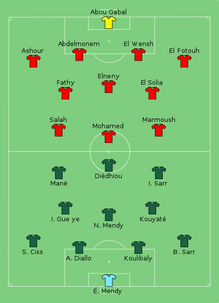
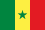

Tournment history
The Africa Cup of Nations referred to as AFCON,
and sometimes as African Cup of Nations,is the main
international men's association football competition in Africa.
It is sanctioned by the Confederation of African Football (CAF),
and was first held in 1957. Since 1968, it has been held every
two years, switching to odd-numbered years in 2013.
In the first tournament in 1957, there were only three participating
nations: Egypt, Sudan, and Ethiopia. South Africa was originally scheduled
to join, but was disqualified due to the apartheid policies of the government
then in power.Since then, the tournament has expanded greatly, making it necessary
to hold a qualifying tournament. The number of participants in the final
tournament reached 16 in 1998 (16 teams were to compete in 1996, but Nigeria withdrew,
reducing the field to 15, and the same happened with Togo's withdrawal in 2010),
and until 2017, the format had been unchanged, with the 16 teams being drawn
into four groups of four teams each, with the top two teams of each group advancing
to a "knock-out" stage.
On 20 July 2017, the Africa Cup of Nations was moved from January to
June and expanded from 16 to 24 teams.
Egypt is the most successful nation in the cup's history, winning the tournament seven times.Three
trophies have been awarded during the
tournament's history, with Ghana, and Cameroon winning the first two versions to keep
after each of them won a tournament three times. The current trophy was first awarded in 2002.
Egypt won an unprecedented three consecutive titles in 2006, 2008, and 2010.
In 2013, the tournament format was switched to being held in odd-numbered years so that it
wouldn't interfere with the FIFA World Cup.
statistics
| Regional federation | Champion(s) | Title(s) |
|---|---|---|
| UNAF (North Africa) | Egypt (7), Algeria (2), Morocco (1), Tunisia (1) | 11 |
| WAFU (West Africa) | Ghana (4), Nigeria (3), Ivory Coast (2), Senegal (1) | 10 |
| UNIFFAC (Central Africa) | Cameroon (5), DR Congo (2), Congo (1) | 8 |
| COSAFA (Southern Africa) | South Africa (1), Zambia (1) | 2 |
Consecutive championships
Teams that have won the Africa Cup of Nations consecutively and have become two-time
champions (two consecutive titles) or three-time champions (three consecutive titles).
| Team | Two championships | Three championships |
|---|---|---|
| Egypt | (1957, 1959) | (2006, 2008, 2010) |
| Ghana | (1963, 1965) | - |
| Cameroon | (2000, 2002) | - |
Map of countries times titles
as of 2021 Africa Cup of Nations.
Rabah Madjer, AFCON
1990 player of the
Tournament.
Trophy and medals

Throughout the history of the Africa Cup of Nations, three trophies have been awarded to the winners of the competition. The original trophy, made of silver, was the Abdelaziz Abdallah Salem Trophy, named after the first CAF president, Egyptian Abdelaziz Abdallah Salem. As the first winner of three Africa Cup of Nations tournaments, Ghana obtained the right to permanently hold the trophy in 1978. The second trophy was awarded from 1980 to 2000, and was named "Trophy of African Unity" or "African Unity Cup".It was given to CAF by the Supreme Council for Sports in Africa prior to the 1980 tournament and it was a cylindrical piece with the Olympic rings over a map of the continent engraved on it. It sat on a squared base and had stylized triangular handles. Cameroon won the Unity Cup indefinitely after they became three-time champions in 2000. In 2001, the third trophy was revealed, a gold-plated cup designed and made in Italy. Cameroon, permanent holders of the previous trophy, were the first nation to be awarded the new trophy after they won the 2002 edition. Egypt won the gold-plated cup indefinitely after they became three-time champions in 2010. Unlike previous winners who would have then taken the trophy home, Egypt were presented with a special full size replica that they were allowed to keep. The winner of each edition receives a replica whose dimensions are equal to that of the original trophy. CAF give 30 gold medals to the winning team, 30 silver medals to the runners-up, 30 bronze medals to the team ranked third and 30 diplomas to the team ranked fourth in the final tournament.
Afcon 2022
The tournament was originally scheduled to be played in June and July 2021. However, the CAF announced on 15 January 2020 that due to unfavourable climatic conditions during that period, the tournament had been rescheduled to be played between 9 January and 6 February 2021.On 30 June 2020, the CAF moved the tournament's dates for the second time to January 2022 following the effects of the COVID-19 pandemic across the continent, whilst retaining the name 2021 Africa Cup of Nations for sponsorship purposes.
The draw
Atmosphere before the start
of the AFCON launch
ceremonies.
Final
on 6 February 2022. Senegal qualified for the knockout stages by finishing at the top of their group
with five points. They reached the final by beating Equatorial Guinea and Burkina Faso in the quarter-final
and semi-final respectively. Egypt finished second in Group D behind Nigeria. They defeated Morocco in the quarter-finals,
and then knocked out hosts Cameroon on penalties.
There were no goals scored in the first 90 minutes of the match, and extra-time was goalless as well.
The best chance of the game was a penalty taken by Sadio Mané, which was saved by Egyptian goalkeeper Mohamed Abou Gabal
in the seventh minute. Neither team had much clear-cut chances. With the score level, the match went to a penalty shoot-out.
The score was 3-2 to Senegal when Édouard Mendy made a decisive save from Mohanad Lasheen; Mane, who had missed his earlier penalty,
decided the match when he scored past Gabal to give Senegal the title.

Teams squad

Match statisics
| Statisics |  Senegal | Egypt |
|---|---|---|
| Goal scored | 0 | 0 |
| Total shots | 13 | 7 |
| Shots on tareget | 8 | 3 |
| Ball possession | 57% | 43% |
| Pass accuracy | 82% | 76% |
| Corner kicks | 3 | 4 |
| Saves | 3 | 8 |
| Yellow cards | 4 | 2 |
| Red cards | 0 | 0 |